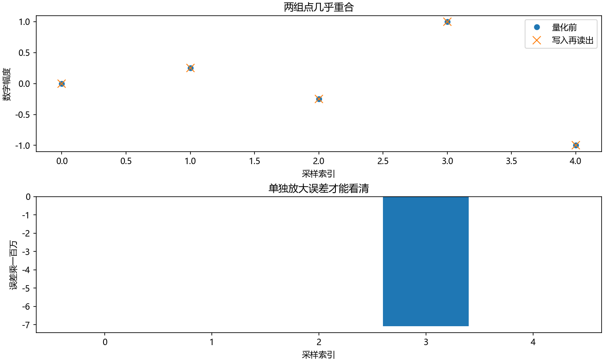
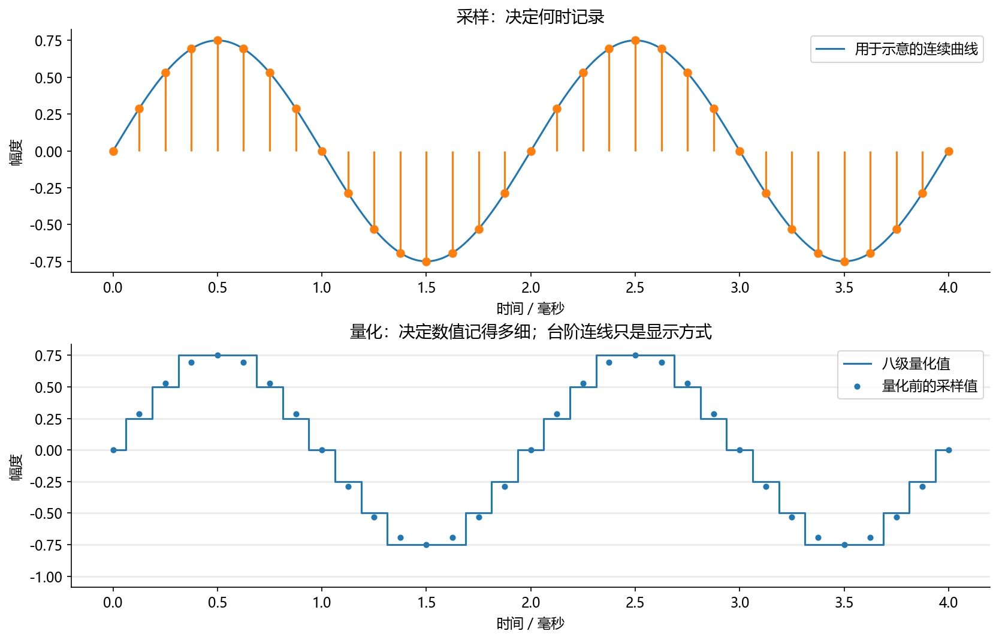
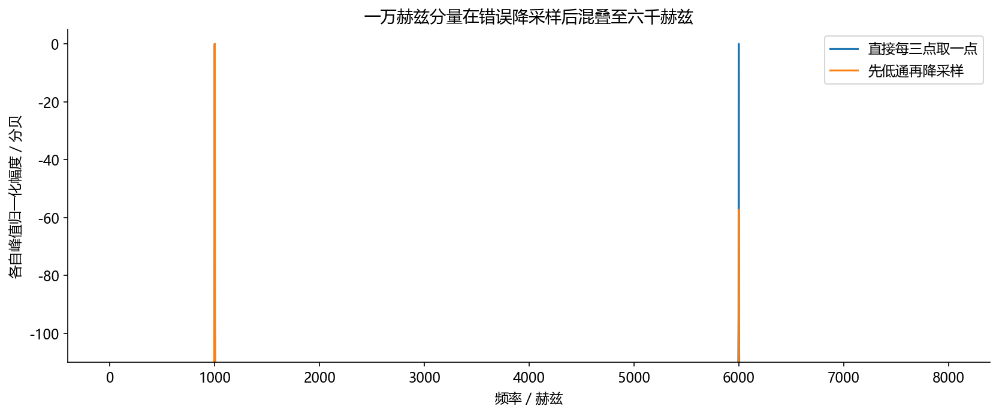

看图理解 · 跟着推演 · 对照真实结果
第02课 · 声音怎样变成采样点和整数
先建立直觉，再逐节讲原理、代码与结果；章节目录可定位学习。用可见的粗量化和真正的16位量化，分清时间采样、幅度刻度与文件格式。
从直觉、原理，到代码与结果
本版保留导览小实验，增加教材逐节精讲、代码分段阅读和结果解释。三个项目另有本次真实模型短推理，第 12 课增加实际训练曲线。按右侧小节分次学习即可，不必一次看完。
完整文字、规范公式和注释代码仍在上方“读完整图文”。视频中的历史报告、教学算例与本次实测分别标明，短演示不冒充完整重训或设备验收。
先修：第01课：频率、周期和数字幅度。
- 能由点数和采样率算时长
- 能解释采样与量化分别约束哪个方向
- 知道改采样率标签、直接抽点与重采样的区别
本课覆盖清单与证据范围
- 1. 数字音频做了两次取舍
- 2. 为什么不能只说“多采几个点就行”
- 3. 16 位 PCM 到底存了什么
- 4. 手算一次存储量与时长
- 5. 不保存 WAV 文件，也能验证读写
- 6. WAV、PCM、MP3、FLAC：容器和编码别混了
- 7. 常见错误与处理顺序
- 8. 再运行一个反例：每三点取一点为什么不够
- 9. 五道练习与参考答案
- 10. 与实习工作的联系
结果从哪里来
- 导览中的小算例实际执行
- 原教材逐节讲解；正文代码/公式/图保留
代码验证合成信号的量化，不模拟ADC电路，也不测真实录音设备；粗量化仅为可视化教学，重采样的抗混叠需要原课扩展实验。
新版视频时间轴已改变，单独记录续播位置；学习计划的完成勾选保持不变。
跟着运行：注释代码、实际输出与结果图
下面代码在生成本站时实际执行。这里只是教学小实验，不是完整模型训练或业务设备测评。
import numpy as np
fs = 8000 # 每秒8000点，与纯音频率不同
n = np.arange(80)
t = n / fs # 80点对应10毫秒
x = 0.8 * np.sin(2 * np.pi * 400 * t)
step = 0.25 # 故意用粗刻度，让量化差别可见
q = step * np.rint(x / step)
# 真正的16位整数：先缩放、取整、限幅，再转类型
pcm = np.clip(np.rint(x * 32768), -32768, 32767).astype(np.int16)
y = pcm.astype(float) / 32768 # 还原本课的浮点约定
t_ms = t * 1000
print('时长:', len(x) / fs, '秒')
print('粗量化最大误差:', np.max(np.abs(q - x)))
print('16位最大误差:', np.max(np.abs(y - x)))
print('16位数据字节数:', pcm.nbytes)
本次实际输出
时长: 0.01 秒 粗量化最大误差: 0.10278640450004328 16位最大误差: 1.335808397934235e-05 16位数据字节数: 160

精讲中的代码、运行步骤与大图
代码片段用于逐行理解；真实运行结果仅限明确标注“本次实际”的部分。教材历史图保留原有实验范围。
代码精读 05 · 第1–18行
源码精读 / 教学片段，需配套环境与上下文，不等同于独立脚本。
import io
import wave
import numpy as np
fs = 16000 # 这里写入文件头的采样率
x = np.array([0.0, 0.25, -0.25, 0.999, -1.0])
# 先缩放、取整和限幅，最后转换成小端 16 位 PCM。
pcm = np.clip(np.rint(x * 32768), -32768, 32767).astype("<i2")
buffer = io.BytesIO() # 内存文件，不覆盖磁盘上的录音
with wave.open(buffer, "wb") as w:
w.setnchannels(1)
w.setsampwidth(2)
w.setframerate(fs)
w.writeframes(pcm.tobytes())
buffer.seek(0) # 读取前先把文件指针移回开头
with wave.open(buffer, "rb") as r:
channels, width, rate, count = (代码精读 05 · 第19–36行
源码精读 / 教学片段，需配套环境与上下文，不等同于独立脚本。
r.getnchannels(), r.getsampwidth(), r.getframerate(), r.getnframes()
)
raw = r.readframes(count) # 返回字节，而不是已经归一化的数组
# 按真实位宽解码，再转浮点恢复本课的幅度约定。
y = np.frombuffer(raw, dtype="<i2").astype(np.float64) / 32768
print("声道/字节宽/采样率/帧数:", channels, width, rate, count)
print("恢复浮点:", y)
print("最大误差:", np.max(np.abs(y - x)))
print("时长（秒）:", count / rate)
# 画出本次往返的真实数值与误差，不把 16 位误差夸大成粗台阶。
from pathlib import Path
import matplotlib
matplotlib.use("Agg")
import matplotlib.pyplot as plt
plt.rcParams.update({"font.family": "Microsoft YaHei", "axes.unicode_minus": False})
assert Path("tutorial/chapters").is_dir(), "请在 audio-course-zh 根目录运行"
fig, axes = plt.subplots(2, 1, figsize=(10, 6), layout="constrained")代码精读 05 · 第37–45行
源码精读 / 教学片段，需配套环境与上下文，不等同于独立脚本。
indices = np.arange(len(x))
axes[0].plot(indices, x, "o", label="量化前")
axes[0].plot(indices, y, "x", markersize=10, label="写入再读出")
axes[0].set(xlabel="采样索引", ylabel="数字幅度", title="两组点几乎重合")
axes[0].legend()
axes[1].bar(indices, (y-x)*1e6)
axes[1].set(xlabel="采样索引", ylabel="误差乘一百万", title="单独放大误差才能看清")
fig.savefig("tutorial/figures/ch02_pcm_roundtrip.png", dpi=150)
plt.close(fig)结果读图 05 · 5. 不保存 WAV 文件，也能验证读写
原教材运行记录

原教材已存图 不是本次新测 先确认实验范围 再解释坐标与单位
结果读图 05 · 5. 不保存 WAV 文件，也能验证读写
原教材运行记录

原教材已存图 不是本次新测 先确认实验范围 再解释坐标与单位
代码精读 08 · 第1–10行
源码精读 / 教学片段，需配套环境与上下文，不等同于独立脚本。
import numpy as np
from scipy.signal import resample_poly
old_fs, new_fs = 48000, 16000
t = np.arange(old_fs) / old_fs # 1 秒，形状 (48000,)
x = 0.35*np.sin(2*np.pi*1000*t) + 0.35*np.sin(2*np.pi*10000*t)
wrong = x[::3] # 错误示范：没有先抗混叠滤波
correct = resample_poly(x, up=1, down=3) # 低通滤波与有理数重采样
print("两个输出的形状:", wrong.shape, correct.shape)
print("正确输出的时长:", len(correct)/new_fs)结果读图 08 · 8. 再运行一个反例：每三点取一点为什么
原教材运行记录

原教材已存图 不是本次新测 先确认实验范围 再解释坐标与单位
闭卷自测：16 kHz、单声道、16 bit、10秒的原始PCM占多少字节，不计文件头？
16000点/秒×1声道×2字节/点×10秒=320000字节。
逐字讲稿 · 可定位回看
一叠 32000 张连续照片，按每秒 16000 张播放需要 2 秒；按每秒 8000 张播放需要 4 秒。音频的采样点也需要一把时间尺子，这把尺子就是采样率。
32000 个单声道采样点，按 16000 Hz 播放：32000 除以 16000，得到 2 秒。 如果完全不改数字，只把采样率标签写成 8000 Hz，就会被解释成 4 秒；播放速度和音高也会改变。
如果真的把这段声音重采样到 8000 Hz，目标是仍然表达同样的 2 秒，此时应约有 16000 点。降采样还要处理会混叠的高频，不能只改文件头。 16000 Hz 的采样率，不表示录音里的人声在发 16000 Hz 的纯音。采样率是记录的节奏，不是声音的音调。
想象你记录温度：每分钟看一次表，这是时间间隔；只记整数度，这是数值刻度。声音数字化也要区分这两个问题，虽然实际设备还包含模拟电路与滤波。
采样率高低控制横轴记录得多密，位深和量化规则控制纵轴能写哪些数。把十六位误以为每秒十六个点，就是把两个维度混在了一起。
今天仍然用一条已知纯音，但故意把幅度刻度做得很粗，让你看见量化究竟改了哪些数。之后再与真正的十六位整数做比较。
本例采样率是八千，意味着每秒每声道记录八千个数。编号为八的点，对应八除以八千秒，也就是一毫秒，不是八秒。
纯音频率是四百赫兹，每一圈用二点五毫秒。八千除以四百得到二十，所以一圈有二十个采样点。记录速度和振动速度现在有了明确关系。
整段八十个点代表十毫秒。数字文件必须同时保留这些数与采样率，播放器才知道应该用多快的速度把它们送出去。只有数组本身还不够。
把步长设为零点二五。原值零点三除以零点二五，得到一点二；舍入到最近整数一，再乘回零点二五，得到零点二五。代码采用最近整数舍入，中点按偶数舍入：一点五到二，二点五也到二。
原值零点四九则更接近零点五，量化误差是量化后减量化前。误差有时为正，有时为负，不是所有点都统一往下移动。
在最近舍入、没有过载且处于内部刻度范围时，误差绝对值不超过半个步长。这里是零点一二五。到编码端点发生限幅时，不能无条件套用这个界限。
有符号十六位整数可以表示负三万二千七百六十八到正三万二千七百六十七，总共六万五千五百三十六个码。正负端点略不对称。
本课转换约定是整数除以三万二千七百六十八，得到负一到小于正一的浮点数。相邻刻度只相差约三万二千七百六十八分之一，比零点二五细很多。
从浮点转回整数时，先缩放、取整和限幅，再改类型。直接把超范围数字强制转换成十六位整数，不等于安全限幅，也不能指望它自动保护音频。
前五行生成八十点的四百赫兹纯音。峰值幅度设为零点八，因此这次不会逼近十六位正端的一点零，便于单独观察舍入误差。
第六和第七行用零点二五步长做粗量化。后面两行则按十六位规则编码再解码。两条路径输入完全一样，但允许的刻度精细程度不同。
最后打印两种最大误差和原始数据字节数。八十个十六位整数，每个两字节，所以是百六十字节。这个数字不包括WAV文件头，也不是压缩格式文件大小。
图中两条曲线使用同一横轴。它们在许多时间点高度不同，因为粗量化把原值归到最近的零点二五刻度；横轴位置没有变化。
粗量化最大误差小于半步长。十六位误差在输出里明显更小，因此图没有把十六位差别伪装成巨大的台阶。请比较实际数字，而不是只凭图的夸张程度判断。
曲线之间的连线只是展示方式，不代表空气中的声压真的沿折线或台阶传播。播放端如何重建连续信号，还涉及数模转换和滤波，不能从折线图直接下结论。
八千赫兹采样的奈奎斯特频率是四千赫兹。五千赫兹的正弦超过这个范围，采样序列可以与某个三千赫兹正弦对应，原来的来源信息混在一起。
这叫混叠。不是播放器不够聪明，而是同一组点已经可能来自不同的连续信号。事后再低通，并不会自动知道哪一部分原来是高频折叠下来的。
所以降低采样率之前，要抑制新采样率无法安全表示的高频，并留出滤波过渡带。只记最高频率等于采样率一半，不检查带宽和滤波条件，是不够的。
原来四万八千个点在四万八千采样率下播放一秒。只把文件头改成一万六，播放器每秒取更少的点，所以要三秒才能播完，音调也随之降低。
如果每三点取一个点，长度确实变成一万六；但原来高于新奈奎斯特频率的部分可能混叠。因此长度对了，并不能证明声音内容也对了。
正确重采样要按比率计算新序列，并在需要时做好抗混叠滤波。原课有专门的高频反例。实际项目应使用经过验证的重采样实现，并检查处理的是时间轴还是声道轴。
WAV是容器，PCM是一类采样编码。很多WAV装十六位整数，但也可能是其他位深或浮点数据。因此不能把所有字节都强行按十六位整数解释。
MP3通常有损，FLAC能无损恢复其编码前的数字采样。但无损压缩不能修复已经发生的削波，把低位深改存高位深也不会凭空补回细节。
双声道数组可能是时间乘声道，也可能声道乘时间。先检查形状、类型、采样率、范围和时长，再决定在哪个轴处理；阵列任务尤其不能先把多个通道盲目平均。
请算十秒、一万六千采样率、单声道、十六位PCM的原始字节数。一步一步写：每秒多少点，每点多少字节，一共多少秒。
十六位等于两字节，所以一万六千乘二再乘十，得到三十二万字节，不含文件头。双声道会再乘二，别把每时刻的声道数漏掉。
课后拿一段录音，记录真实格式、采样率、声道、形状、类型和时长。再说明只改采样率标签会有什么后果。能做出这张体检单，你就能开始接数据清洗任务了。
从四万八千赫兹变成一万六千赫兹，不是只修改WAV文件头。因为新采样率的奈奎斯特频率只有八千赫兹，降采样前要抑制超出新带宽的分量，避免它折叠进低频。
随后把连续时间意义下的信号估计到新采样时刻。整数三倍的情形可以理解为先低通再每三点保留一点；一般比例需要更完整的插值和滤波，直接切片不是通用重采样。
两秒录音原来九万六千点，转换后应约三万两千点，但时长仍约两秒。若点数没变、标签变为一万六千，就会变成六秒，音高也跟着错了。
读取函数可能把整数PCM自动换成浮点。先确认返回的数据类型与约定，不能看到float32就认定原文件有三十二位有效录音精度，也不能把整数最大值三万二千七百六十七当成普通归一化幅值。
写入十六位PCM时，超出可表示范围的幅值可能被裁掉。削波后的平顶不是音量大一点这么简单，失去的峰值无法通过再乘小增益恢复。输出前记录峰值与削波样本数。
比较降噪前后若分别拉到同样峰值，会掩盖算法改变整体增益的问题。分析用原始浮点数据，安全试听可对所有对照使用同一个增益，并把这个增益写进记录。
连续声音要放进计算机，可以先想成两步。第一步是采样（sampling）：隔固定时间看一次数值。第二步是量化（quantization）：把每个数值放到有限的刻度上。采样处理“横轴的时间有多密”，量化处理“纵轴有多少档”。
像用方格纸描曲线：横向格子影响你多久记一次，纵向格子影响你能记得多细。这个类比的局限是，真实采样系统还有模拟滤波、电路噪声和时钟误差，并非先得到一条完美曲线再随意读数。
采样率 f下标s=16000 Hz 表示每秒每声道 16000 个点，采样间隔 （1）除以（f下标s）=62.5 微秒。它不表示“声音频率是 16000 Hz”。位深 16 bit 表示每个采样的编码位数，不表示一秒只有 16 个点。
理想采样定理针对带限信号：最高频率低于 （f下标s）除以（2），并满足相关条件时，可以由均匀采样恢复。工程上还要给抗混叠滤波器留过渡带，因此不能把“刚好等于一半”当成万能安全边界。
以 f下标s=8000 Hz 为例，一条 5000 Hz 正弦采样后，会与某个 3000 Hz 正弦序列出现混叠对应。文件中的这些点已经无法告诉你原来究竟来自哪个连续频率。采样完成后再低通，并不能把混在一起的来源自动分开；应在降低采样率前抑制会折叠的高频。
只把 WAV 文件头从 48000 改成 16000，却不改变样本序列，等于让播放器用原来三倍的时间播放。时长变成三倍，各频率分量变为原来的三分之一，通常听起来更低。这不是保持原来声音的重采样。真正的 48 kHz → 16 kHz 重采样，需要低通等处理并减少点数，时长才基本保持不变。 SciPy 的 resample_poly 文档明确说明了上采样、低通和下采样的过程。
PCM（脉冲编码调制）在这里可以理解为直接存采样值的编码方式。常见有符号 16 位整数范围是 -32768 到 32767，总共 65536 个整数码。记整数码为 x下标PCM，约定转换为浮点数的方式是：
转换后的取值在 [-1,1) 内；最大值为 （32767）除以（32768），不是严格的 1，这是两补码整数范围不对称造成的。
从浮点转回整数时，顺序很重要：先决定缩放规则，必要时限幅，再取整，最后转换类型。直接对超过范围的浮点数做 astype(np.int16)，不等于安全限幅。教学代码采用 clip(round(x32768), -32768, 32767)，这是约定之一，使用别人的库时要核对其约定。
量化误差可写为 e[n]=x下标q[n]-x[n]。在没有过载、使用最近舍入的均匀量化器内部区域，
误差绝对值不超过半个量化步长。真实音频中误差可能与信号相关；“量化误差一定是独立白噪声”只是某些分析中的近似，不是天生定律。
抖动（dither）是量化前有意加入的小噪声，可改变误差特性，但会增加噪声功率，初学阶段先知道它不是“随便加噪声能提高所有指标”。
C 是声道数，B 是每采样位数。16 kHz、单声道、16 bit 的数据，每秒是 16000乘1乘2=32000 字节；10 秒是 320000 字节。这里说的是十进制字节，不是把 KB 和 KiB 混在一起。
48 kHz、双声道、16 bit，每秒 192000 字节，10 秒 1920000 字节。双声道的一个“音频帧”（audio frame）通常包含同一时刻所有声道的采样，所以 48000 个音频帧/秒会含 96000 个声道采样数值。
后面 STFT 里“帧”又表示一段时间窗口，两个术语同名，含义不同，要看上下文。
这段程序使用 NumPy 和 Python 标准库，把 WAV 放在内存里，所以不会覆盖你的本地录音；末尾使用 Matplotlib 保存实验图。请在课程根目录 audio-course-zh 运行。它只演示常见的 16 位 PCM WAV，不声称读取所有 WAV 编码。
Python 不同版本对 WAV 子格式的支持有差别，使用时可查官方 wave 文档。
上图使用的就是 [0,0.25,−0.25,0.999,−1] 五个数。大部分点可精确表达，只有 0.999 对应明显非零误差；下图纵轴特意乘一百万显示微小差别，不代表实际播放增益放大了一百万倍。
x 和 pcm 都是 (5,)，区别是数据类型。<i2 表示小端、有符号、2 字节整数；小端说明多字节数在字节流中的排列顺序。tobytes() 变成字节流，文件头另外描述采样率、声道等信息。frombuffer 按给定类型解释字节，随后转浮点再除以 32768。
预期参数是 1 2 16000 5；时长为 （5）除以（16000 Hz）=0.0003125 s。0.25 和 −0.25 可以精确落在这个量化网格上，0.999 通常不能。误差应在 （1）除以（65536）约等于0.00001526 以内。
请注意我们没有在这个测试里使用正端 1.0：它会被限到 32767，不能套用内部区间的半步长误差结论。
本次实际运行上述内存读写代码，最大误差为 7.080078125×10⁻⁶，时长为 0.0003125 s；这验证了这个小例子的编码往返，不是音频设备的保真度测量。
图由 beginner_labs.py 的 quantization() 实际生成。为了让台阶肉眼可见，它使用 0.25 步长的八级量化，而不是上方 16 bit 的精细刻度。上图的连续曲线是数学函数画出的示意，散点才是采样位置；下图台阶是展示量化值的连接方式，不等于声波在空气中真的长成台阶。
运行记录中本组样本最大误差约 0.0571，小于半步长 0.125。
先看中文注释：这里写入文件头的采样率。这几行仍属于5. 不保存 WAV 文件，也能验证读写的同一处理链，输入变量沿用前一段，不是一个独立程序。
先看中文注释：先缩放、取整和限幅，最后转换成小端 16 位 PCM。；内存文件，不覆盖磁盘上的录音。截断把数值限制在给定范围，能防止非法值或过大增益，但边界外的信息也会被丢弃。
先看中文注释：读取前先把文件指针移回开头。这几行仍属于5. 不保存 WAV 文件，也能验证读写的同一处理链，输入变量沿用前一段，不是一个独立程序。
先看中文注释：返回字节，而不是已经归一化的数组；按真实位宽解码，再转浮点恢复本课的幅度约定。。打印是观测点。把这里的真实值与理论预期比较，若不一致应保留输出排错，而不是手工改成期望数字。
先看中文注释：画出本次往返的真实数值与误差，不把 16 位误差夸大成粗台阶。。绝对值对实数表示幅度大小，对复数表示模长。它丢掉符号或相位，不能代替完整复数频谱。 打印是观测点。把这里的真实值与理论预期比较，若不一致应保留输出排错，而不是手工改成期望数字。
断言把预期写成可失败的检查。通过只说明这一条件成立，不自动代表声音质量或全部场景合格。 绘图展示的是传入数组。核对横轴单位、图例与统一尺度后，才可以比较不同处理的变化。
arange按固定步长生成索引。若随后除以采样率，才把采样点编号换成秒。 绘图展示的是传入数组。核对横轴单位、图例与统一尺度后，才可以比较不同处理的变化。
绘图展示的是传入数组。核对横轴单位、图例与统一尺度后，才可以比较不同处理的变化。
arange按固定步长生成索引。若随后除以采样率，才把采样点编号换成秒。 绘图展示的是传入数组。核对横轴单位、图例与统一尺度后，才可以比较不同处理的变化。
先看这张随教材保存的图。本段内存 WAV 往返代码的实际运行图。本次视频引用既有结果，不把它称为新运行。
横轴、纵轴、图例和单位决定图在回答什么问题。若曲线重合，先问它验证的是数值等价、形状还是算法质量。图像相似不自动证明真实业务效果相同。
把图中观察与本节假设联系起来，再回到前面的代码确认数组来源。合成信号实验、历史报告和真实模型输出属于不同证据范围，不能混成同一个成绩。
先看这张随教材保存的图。已运行的采样与粗量化实验。本次视频引用既有结果，不把它称为新运行。
横轴、纵轴、图例和单位决定图在回答什么问题。若曲线重合，先问它验证的是数值等价、形状还是算法质量。图像相似不自动证明真实业务效果相同。
把图中观察与本节假设联系起来，再回到前面的代码确认数组来源。合成信号实验、历史报告和真实模型输出属于不同证据范围，不能混成同一个成绩。
WAV 是一种文件容器；PCM 是编码/表示方式。许多 WAV 文件装的是未压缩 PCM，但“扩展名是 .wav”不能证明内部必然是 16 位整数。MP3 通常是有损编码，FLAC 是无损音频压缩。
无损的意思是能恢复其编码前的数字采样，不是能修复录音时已经发生的失真，也不是自动比所有 PCM 声音更清楚。
做训练数据时，要记录解码后的采样率、声道、长度和幅度范围；还应了解原始编码历史，因为有损压缩可能留下不同伪影。把 MP3 改名成 WAV 不会完成转换，把 16 bit 保存成 24 bit 也不会凭空增加原来丢失的信息。 对双声道，常见数组形状是 [时间, 声道]，也有库使用 [声道, 时间]。先看形状和文档，再决定在哪个轴上重采样。左右声道平均可以得到一种单声道混音，但若信号不同相或来自不同传感器，盲目平均可能损失信息；阵列任务尤其不能先把所有通道揉成一条。
声音播放变慢：先查文件头采样率和实际采集采样率，不要先调变速模型。重采样后音质很怪：检查是否直接使用 x[::3]，以及输入原本是否已有足够低通。
读出波形数值很大：先检查整数 PCM 是否还没归一化。读取异常：检查真实格式、位宽、声道和库支持，而不是把所有文件都强行按 int16 解释。
一个可靠习惯是每次读入先打印：shape、dtype、sample_rate、duration、min/max、是否有 NaN/Inf。这张“入场体检单”比直接调用模型更能避免浪费时间。
这段扩展实验需要 SciPy。我们故意放入 1 kHz 和 10 kHz 两个分量，再把 48 kHz 降到 16 kHz。新采样率不能无混叠地保留原来的 10 kHz，因此正确处理应先抑制它。把原来高频变成不存在的 6 kHz，比单纯丢掉高频更容易误导后续模型。
图由 beginner_labs.py 的 resampling() 运行上面同一信号和处理方式后，进一步计算频谱得到。两条曲线各自按峰值归一化，重点比较 6 kHz 位置：直接抽点保留明显伪分量，正确滤波后它大幅降低。脚本去除边界后测得该分量幅度约从 0.35 降至 0.000477；
这个数字只描述本例和本滤波配置，不是所有重采样器的统一性能。 跟着做两步：先把 10 kHz 改成 3 kHz，预测它是否需要被滤掉；再把输入变成双声道，想清楚重采样应沿哪个轴。你会发现“音频长度看起来对了”只验证了时长，不能验证频谱内容正确。数据工程也需要小型信号测试。
先看中文注释：1 秒，形状 (48000,)。arange按固定步长生成索引。若随后除以采样率，才把采样点编号换成秒。 正弦或余弦的输入是弧度。频率乘以时间再乘二派，才得到相位；幅度系数控制波形大小。
先看中文注释：错误示范：没有先抗混叠滤波；低通滤波与有理数重采样。打印是观测点。把这里的真实值与理论预期比较，若不一致应保留输出排错，而不是手工改成期望数字。
先看中文注释：1 秒，形状 (48000,)；错误示范：没有先抗混叠滤波；低通滤波与有理数重采样。arange按固定步长生成索引。若随后除以采样率，才把采样点编号换成秒。 正弦或余弦的输入是弧度。频率乘以时间再乘二派，才得到相位；幅度系数控制波形大小。
先看这张随教材保存的图。实际运行的降采样对比：10 kHz 混叠到 6 kHz。本次视频引用既有结果，不把它称为新运行。
横轴、纵轴、图例和单位决定图在回答什么问题。若曲线重合，先问它验证的是数值等价、形状还是算法质量。图像相似不自动证明真实业务效果相同。
把图中观察与本节假设联系起来，再回到前面的代码确认数组来源。合成信号实验、历史报告和真实模型输出属于不同证据范围，不能混成同一个成绩。
1. 32000 个单声道采样，采样率 16 kHz，时长是多少？答：2 秒。 2. 48 kHz、双声道、24 bit、1 分钟的原始 PCM 大小是多少？答：48000乘2乘3乘60=17280000 字节，不含头。 3. 48 kHz 的 1 秒数据只改标签为 16 kHz，播放时长是多少？
答：3 秒，不是 1 秒。 4. 为什么不能把所有 WAV 都用 np.frombuffer(..., int16)？答：可能是不同位深、浮点或其他子格式，必须依据真实元数据解释。 5. 把数组从 (16000, 2) 平均为 (16000,)，丢掉了什么？
答：两个声道的独立信息，包括可用于定位或波束形成的通道间差异。
这节知识对应数据清洗、模型输入规范、格式转换和线上排障。过关不是背出 PCM 全称，
而是拿到陌生录音能给出正确的规格报告，并能判断重采样是否改变了时长。
请自己写一个 10 行以内的音频信息打印函数，并保留一份“错误采样率标签”的反例说明。下一课会解释为什么这些幅度数字还不能直接叫“响度”。
适用边界与参考正文
代码验证合成信号的量化，不模拟ADC电路，也不测真实录音设备；粗量化仅为可视化教学，重采样的抗混叠需要原课扩展实验。
教学图与实验图由本站整理生成；项目代码、预训练模型和公开数据的来源见配套正文。旁白是本地中文语音合成，不是教师真人录音，也不是 NotebookLM 生成。没有向 Google 上传项目材料。